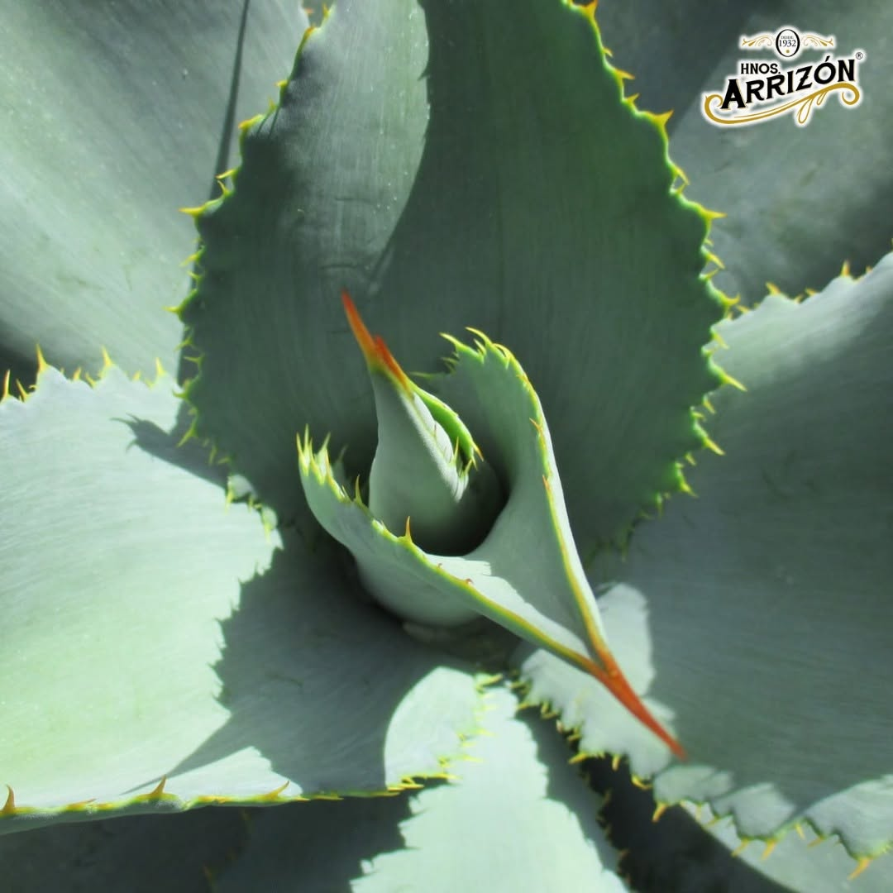

Video
Paso 01 · Recolección
Recolección de semilla
Trabajamos con agave maximiliana, la especie silvestre de la sierra. Colectamos las semillas de plantas sanas para garantizar la siguiente generación.